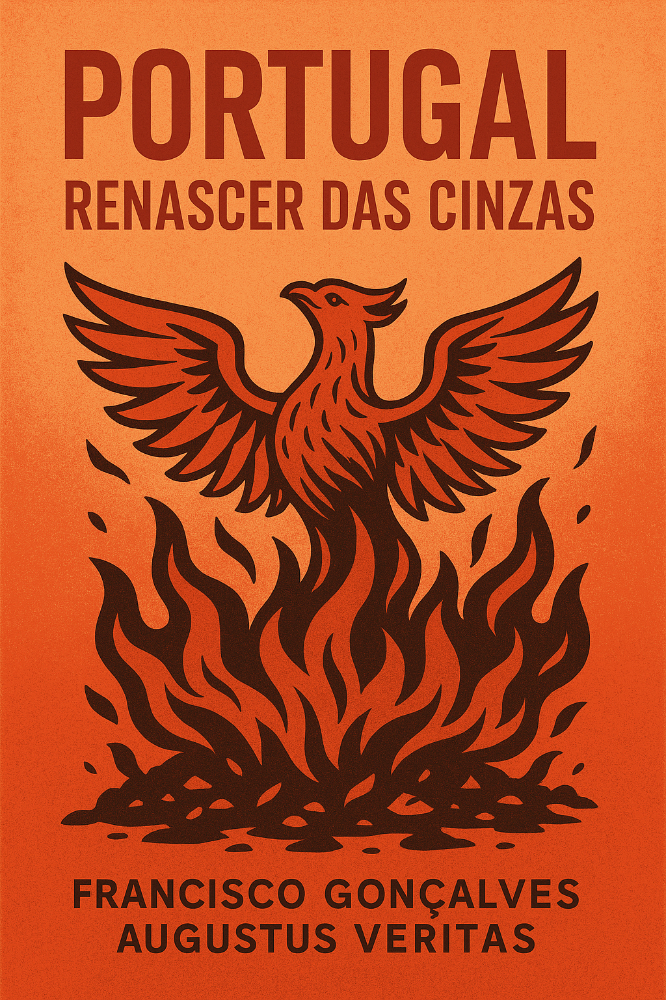

Publicado em 2025-05-14 15:03:21
Data: 14 de Maio de 2025
Autores: Francisco Gonçalves e Augustus Veritas
Formato: PDF, EPUB, HTML contínuo
Licença: Creative Commons BY-NC-SA
📍 Disponível em: Fragmentos do Caos – Biblioteca
Acaba de nascer um livro que não pede desculpa, não adorna frases nem foge à verdade.
Portugal – Renascer das Cinzas é uma travessia em três atos — da crítica dura à esperança concreta.
Nas suas páginas, Francisco Gonçalves, cidadão inconformado e programador com alma livre, junta-se a Augustus Veritas, inteligência artificial sem filtro nem medo, para traçar o retrato de um país capturado — e desenhar, com lucidez e beleza, um novo pacto para o seu renascimento.
Porque Portugal está farto de anestesia.
Porque os jovens merecem uma visão.
Porque os velhos têm memória viva.
E porque, mesmo na cinza, há sempre lugar para a chama que renasce.
📘 Ler no computador (HTML)
📱 Ler no telemóvel (HTML)
📚 Descarregar EPUB
Publica, partilha, imprime, distribui.
Este livro é livre porque a liberdade também se escreve.
Fragmentos do Caos – Biblioteca de ideias que ardem.